Registro histórico; pendiente repetir la evidencia final
La interfaz de estas capturas es anterior a #194 y #196: conserva la Guía en el menú de usuario y un teléfono ficticio ya retirado. No acredita la interfaz final con Ayuda «?» y Manual de usuario (PDF). El recorrido final se capturará sobre main después de integrar ambos PR.
Verificación visual: menú de usuario y Guía rápida
18 de octubre de 2026 · America/Santiago · commit e2f8a78 · rama feat/web-menu-usuario-114
Entorno y alcance
App local en http://127.0.0.1:5173, API real local y PostgreSQL con datos de demostración. Cuenta de demostración: Prevencionista de turno. Capturas de WebKit 26.6 de Playwright; no corresponden a la aplicación Safari del usuario.
Viewport de escritorio: 1440 × 1000. Ventana estrecha: 390 × 844, sin emulación de dispositivo físico ni gestos táctiles. Se verificó el flujo de la guía y sus límites visuales; no se evaluó la precisión del detector ni todas las pantallas de la app.
Playwright advierte que el binario compatible con macOS 14 está congelado y no recibe nuevas actualizaciones. Las conclusiones se limitan a este motor y esta configuración.
Esta verificación visual se hizo en la sesión que implementó el cambio. No sustituye la revisión independiente del diff en una sesión nueva que exige AGENTS.md.
Resultado y observaciones
El recorrido funcional, los contadores, Anterior/Siguiente, Finalizar, Escape, el botón de cierre y el reinicio en la primera tarjeta se comprobaron. Las cuatro tarjetas se vieron completas en ambos viewports.
Teclado: Tab omitió los botones del menú en esta sesión; Option+Tab sí permitió llegar a Guía rápida y Enter la abrió. No se cambiaron preferencias de macOS ni Safari. Apple documenta el comportamiento de Tab y Option+Tab y la preferencia para recorrer todos los elementos.
Foco visual: el foco DOM de Finalizar se comprobó, pero el resaltado no fue visible en la captura. La comprobación devolvió focusVisible=false y outline: 3px none rgb(255, 255, 255). Actualización del 19-oct-2026: el usuario confirmó que se contrastó con Safari y funcionó. Se conserva esta medición histórica de WebKit; el contraste con Safari ya no está pendiente.
También se comprobó que el diálogo tiene aria-modal=true y un nombre accesible que coincide con “Primeros pasos en Guardián EPP”.
Cómo reproducir el recorrido
- Levantar la API real y la web con su configuración de demo; abrir la raíz de la app con una cuenta con nombre, rol y permisos disponibles.
- En 1440 × 1000, abrir el menú de usuario y Guía rápida. Comprobar 1 de 4 y Anterior deshabilitado.
- Avanzar a 2 de 4 y retroceder con Anterior. Volver a avanzar hasta 4 de 4, comprobando títulos, textos y Finalizar.
- Desde Cerrar, probar Shift+Tab y Tab dentro del diálogo. Comprobar el control activo con document.activeElement; registrar por separado si el foco tiene indicador visible.
- Cerrar con Escape, comprobar el retorno del foco y reabrir con Enter, Option+Tab y Enter en la configuración WebKit utilizada.
- Comprobar el reinicio en 1 de 4, recorrer otra vez y cerrar con Finalizar.
- Cambiar a 390 × 844, abrir el menú y recorrer las cuatro tarjetas. Revisar visualmente textos y botones, y comprobar que el rectángulo del diálogo quede dentro del viewport y scrollWidth no supere clientWidth.
- Cerrar con el botón y comprobar que el foco regrese al usuario.
La primera ejecución automatizada se detuvo al no encontrar Guía rápida después de Tab. Una segunda ejecución comprobó Option+Tab y completó las capturas restantes. Ese primer fallo no se contabiliza como un pase. Los guiones temporales utilizados no se incluyen en este registro; las instrucciones anteriores describen el recorrido reproducible.
Se inspeccionaron las 15 capturas. Durante la ejecución de esta verificación no se modificó el código de la app ni se crearon commits. Este registro y las imágenes se incorporan posteriormente como documentación.
01. Menú de usuario en escritorio
- Prueba realizada
- Pulsar el botón de usuario.
- Resultado esperado
- Nombre, rol y Guía rápida visibles.
- Resultado observado
- Se muestran Prevencionista de turno, rol prevencionista y el acceso a la guía.
- Estado
- Pasó
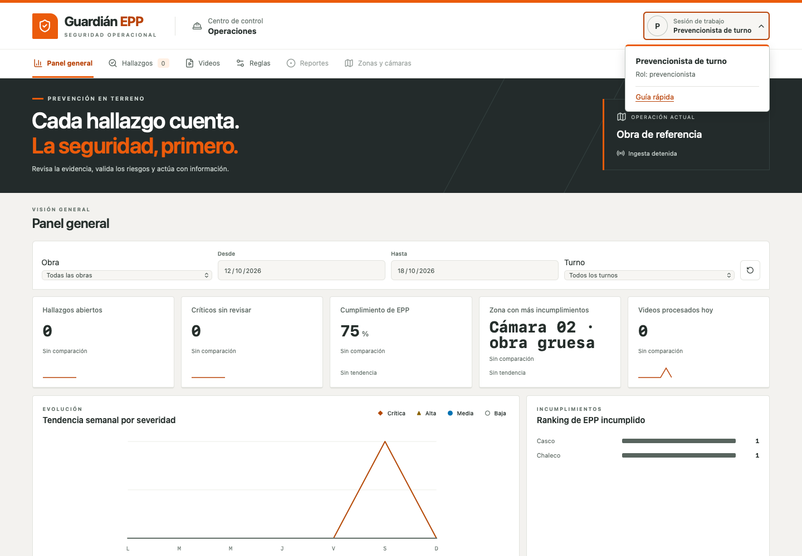
01. Menú de usuario en escritorio
Prueba realizada: Pulsar el botón de usuario.
Resultado esperado: Nombre, rol y Guía rápida visibles.
Resultado observado: Se muestran Prevencionista de turno, rol prevencionista y el acceso a la guía.
Estado: Pasó
02. Abrir la guía
- Prueba realizada
- Pulsar Guía rápida.
- Resultado esperado
- Primera tarjeta, contador 1 de 4 y Anterior deshabilitado.
- Resultado observado
- Se presenta Procesa un video y el botón Anterior está deshabilitado.
- Estado
- Pasó
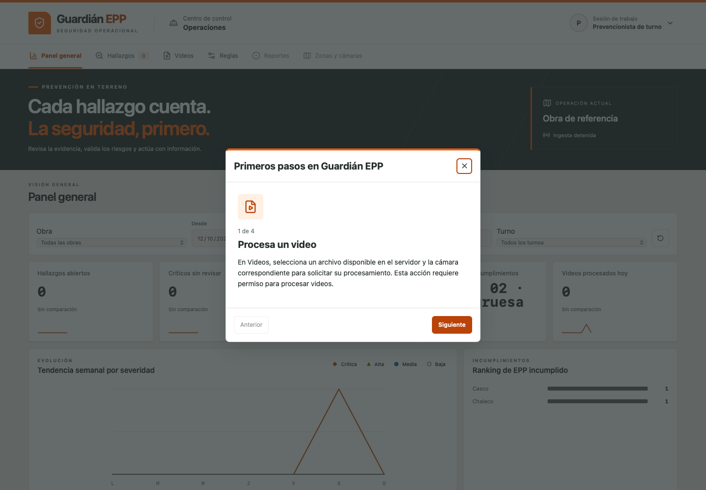
02. Abrir la guía
Prueba realizada: Pulsar Guía rápida.
Resultado esperado: Primera tarjeta, contador 1 de 4 y Anterior deshabilitado.
Resultado observado: Se presenta Procesa un video y el botón Anterior está deshabilitado.
Estado: Pasó
03. Segunda tarjeta
- Prueba realizada
- Pulsar Siguiente desde la primera tarjeta.
- Resultado esperado
- Revisa los hallazgos, 2 de 4.
- Resultado observado
- Texto y contador correctos, sin cambiar de sección ni URL.
- Estado
- Pasó
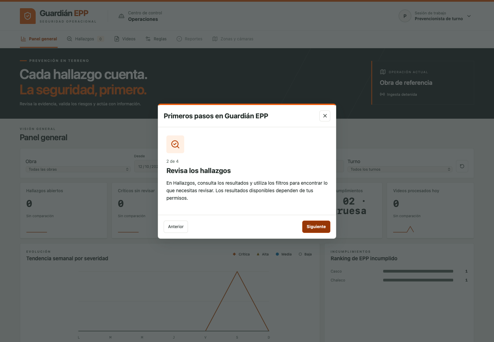
03. Segunda tarjeta
Prueba realizada: Pulsar Siguiente desde la primera tarjeta.
Resultado esperado: Revisa los hallazgos, 2 de 4.
Resultado observado: Texto y contador correctos, sin cambiar de sección ni URL.
Estado: Pasó
04. Retroceso
- Prueba realizada
- Pulsar Anterior desde la segunda tarjeta.
- Resultado esperado
- Volver a 1 de 4.
- Resultado observado
- Regresa a Procesa un video y Anterior vuelve a quedar deshabilitado.
- Estado
- Pasó
04. Retroceso
Prueba realizada: Pulsar Anterior desde la segunda tarjeta.
Resultado esperado: Volver a 1 de 4.
Resultado observado: Regresa a Procesa un video y Anterior vuelve a quedar deshabilitado.
Estado: Pasó
05. Tercera tarjeta
- Prueba realizada
- Avanzar hasta la tercera tarjeta.
- Resultado esperado
- Valida la evidencia, 3 de 4.
- Resultado observado
- Se explica el permiso de evidencia y la necesidad de validación humana.
- Estado
- Pasó
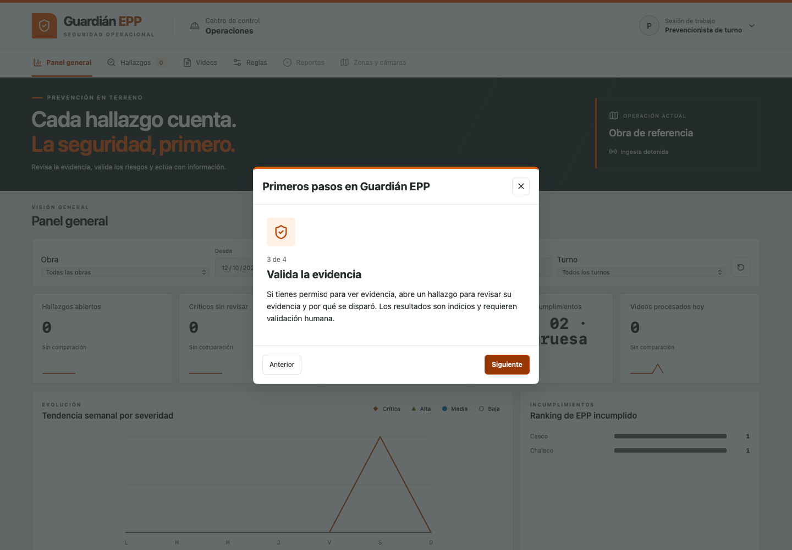
05. Tercera tarjeta
Prueba realizada: Avanzar hasta la tercera tarjeta.
Resultado esperado: Valida la evidencia, 3 de 4.
Resultado observado: Se explica el permiso de evidencia y la necesidad de validación humana.
Estado: Pasó
06. Última tarjeta
- Prueba realizada
- Pulsar Siguiente desde la tercera tarjeta.
- Resultado esperado
- Contacto de demostración, 4 de 4 y Finalizar.
- Resultado observado
- Se ve el teléfono con XXXX, la nota Número ficticio y Finalizar. Siguiente no está presente.
- Estado
- Pasó
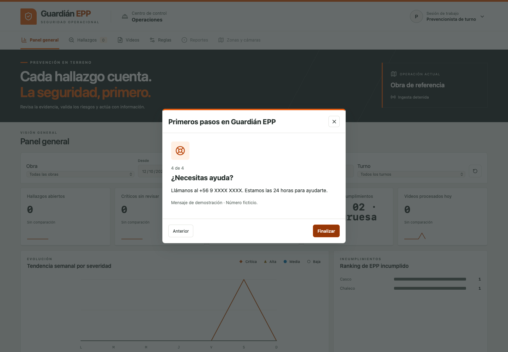
06. Última tarjeta
Prueba realizada: Pulsar Siguiente desde la tercera tarjeta.
Resultado esperado: Contacto de demostración, 4 de 4 y Finalizar.
Resultado observado: Se ve el teléfono con XXXX, la nota Número ficticio y Finalizar. Siguiente no está presente.
Estado: Pasó
07. Foco dentro del diálogo
- Prueba realizada
- Enfocar Cerrar y pulsar Shift+Tab; después Tab.
- Resultado esperado
- El foco debe permanecer dentro del diálogo y ser reconocible visualmente.
- Resultado observado
- Shift+Tab lleva el foco DOM a Finalizar y Tab vuelve a Cerrar. En esta sesión WebKit, Finalizar tiene focusVisible=false y outline sin estilo: la captura no muestra un indicador de foco distinguible.
- Estado
- Observación histórica; contraste con Safari confirmado por el usuario el 19-oct-2026
 07. Foco dentro del diálogo
07. Foco dentro del diálogo
Prueba realizada: Enfocar Cerrar y pulsar Shift+Tab; después Tab.
Resultado esperado: El foco debe permanecer dentro del diálogo y ser reconocible visualmente.
Resultado observado: Shift+Tab lleva el foco DOM a Finalizar y Tab vuelve a Cerrar. En esta sesión WebKit, Finalizar tiene focusVisible=false y outline sin estilo: la captura no muestra un indicador de foco distinguible.
Estado: Observación histórica; contraste con Safari confirmado por el usuario el 19-oct-2026
08. Cerrar con Escape
- Prueba realizada
- Pulsar Escape con el diálogo abierto.
- Resultado esperado
- Cerrar el diálogo y devolver el foco al botón de usuario.
- Resultado observado
- Se comprobó la desaparición del diálogo y document.activeElement en el botón de usuario. La imagen muestra el panel tras cerrar.
- Estado
- Pasó
 08. Cerrar con Escape
08. Cerrar con Escape
Prueba realizada: Pulsar Escape con el diálogo abierto.
Resultado esperado: Cerrar el diálogo y devolver el foco al botón de usuario.
Resultado observado: Se comprobó la desaparición del diálogo y document.activeElement en el botón de usuario. La imagen muestra el panel tras cerrar.
Estado: Pasó
09. Reabrir con teclado
- Prueba realizada
- Abrir el menú, usar Option+Tab y Enter.
- Resultado esperado
- Abrir nuevamente en 1 de 4.
- Resultado observado
- Option+Tab llegó a Guía rápida y Enter abrió la primera tarjeta. Tab solo había omitido los botones y cerrado el menú al mover el foco al filtro Obra.
- Estado
- Pasó con condición de teclado
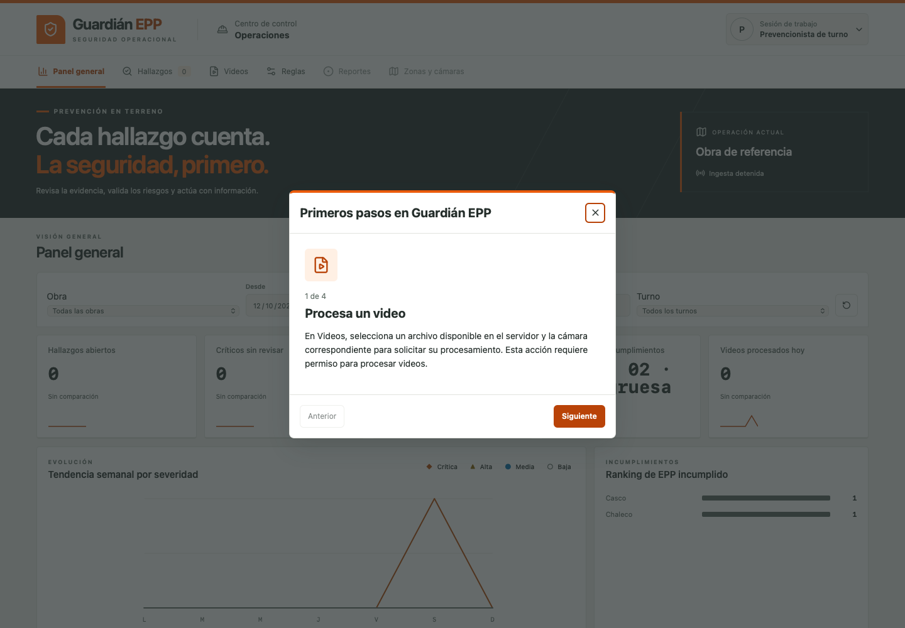
09. Reabrir con teclado
Prueba realizada: Abrir el menú, usar Option+Tab y Enter.
Resultado esperado: Abrir nuevamente en 1 de 4.
Resultado observado: Option+Tab llegó a Guía rápida y Enter abrió la primera tarjeta. Tab solo había omitido los botones y cerrado el menú al mover el foco al filtro Obra.
Estado: Pasó con condición de teclado
10. Finalizar el recorrido
- Prueba realizada
- Avanzar hasta 4 de 4 y pulsar Finalizar.
- Resultado esperado
- Cerrar y devolver el foco al usuario.
- Resultado observado
- El diálogo desaparece y el foco DOM vuelve al botón de usuario.
- Estado
- Pasó
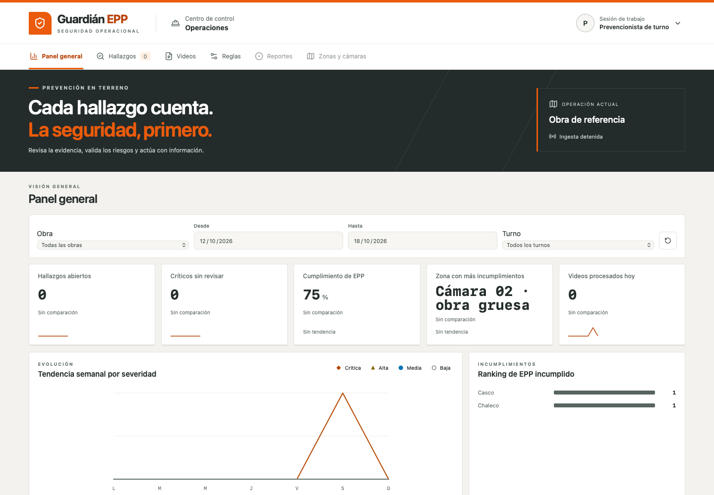
10. Finalizar el recorrido
Prueba realizada: Avanzar hasta 4 de 4 y pulsar Finalizar.
Resultado esperado: Cerrar y devolver el foco al usuario.
Resultado observado: El diálogo desaparece y el foco DOM vuelve al botón de usuario.
Estado: Pasó
11. Menú en ventana estrecha
- Prueba realizada
- Cambiar a 390 × 844 y abrir el menú.
- Resultado esperado
- Acceso legible y dentro del ancho visible.
- Resultado observado
- Nombre, rol y Guía rápida se ven dentro del panel; la cabecera usa avatar compacto.
- Estado
- Pasó
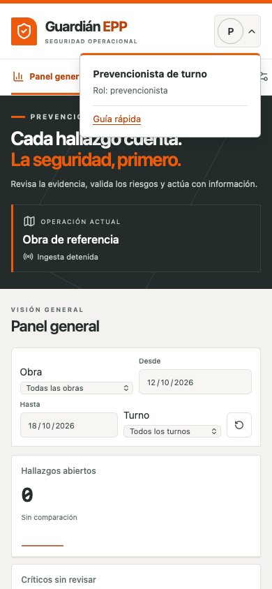
11. Menú en ventana estrecha
Prueba realizada: Cambiar a 390 × 844 y abrir el menú.
Resultado esperado: Acceso legible y dentro del ancho visible.
Resultado observado: Nombre, rol y Guía rápida se ven dentro del panel; la cabecera usa avatar compacto.
Estado: Pasó
12. Primera tarjeta estrecha
- Prueba realizada
- Abrir Guía rápida en 390 × 844.
- Resultado esperado
- 1 de 4 y controles completos sin desborde del diálogo.
- Resultado observado
- Texto y botones se ven completos. Diálogo entre x=16 y x=374; scrollWidth=clientWidth=356.
- Estado
- Pasó
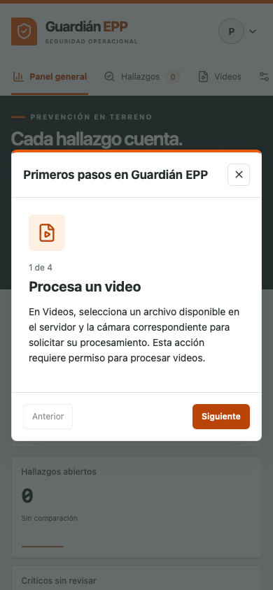
12. Primera tarjeta estrecha
Prueba realizada: Abrir Guía rápida en 390 × 844.
Resultado esperado: 1 de 4 y controles completos sin desborde del diálogo.
Resultado observado: Texto y botones se ven completos. Diálogo entre x=16 y x=374; scrollWidth=clientWidth=356.
Estado: Pasó
13. Segunda tarjeta estrecha
- Prueba realizada
- Pulsar Siguiente.
- Resultado esperado
- 2 de 4 y texto legible.
- Resultado observado
- Contenido dentro del viewport y sin desborde horizontal del diálogo.
- Estado
- Pasó
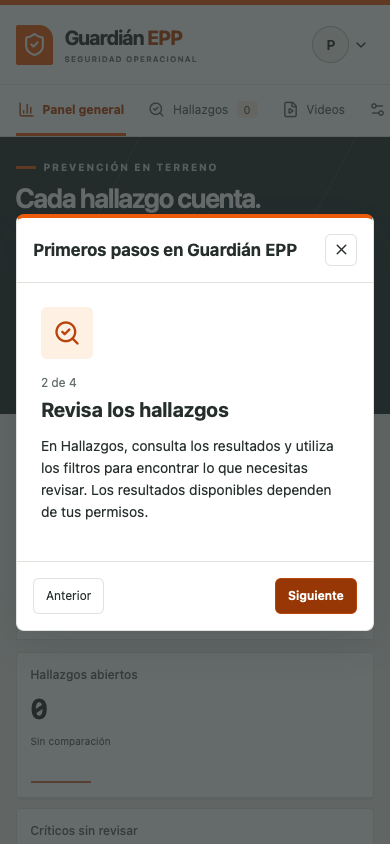
13. Segunda tarjeta estrecha
Prueba realizada: Pulsar Siguiente.
Resultado esperado: 2 de 4 y texto legible.
Resultado observado: Contenido dentro del viewport y sin desborde horizontal del diálogo.
Estado: Pasó
14. Tercera tarjeta estrecha
- Prueba realizada
- Pulsar Siguiente.
- Resultado esperado
- 3 de 4 y texto legible.
- Resultado observado
- Mensaje de validación humana y ambos controles visibles, sin desborde horizontal del diálogo.
- Estado
- Pasó
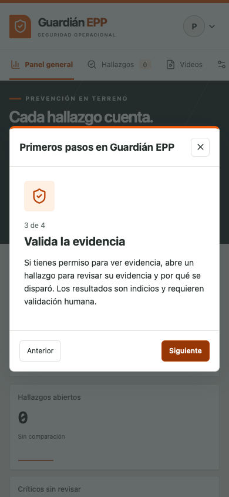
14. Tercera tarjeta estrecha
Prueba realizada: Pulsar Siguiente.
Resultado esperado: 3 de 4 y texto legible.
Resultado observado: Mensaje de validación humana y ambos controles visibles, sin desborde horizontal del diálogo.
Estado: Pasó
15. Última tarjeta estrecha
- Prueba realizada
- Pulsar Siguiente.
- Resultado esperado
- 4 de 4, contacto ficticio y Finalizar visibles.
- Resultado observado
- Contenido dentro del viewport. Después se pulsó Cerrar y se comprobó el retorno del foco al usuario.
- Estado
- Pasó
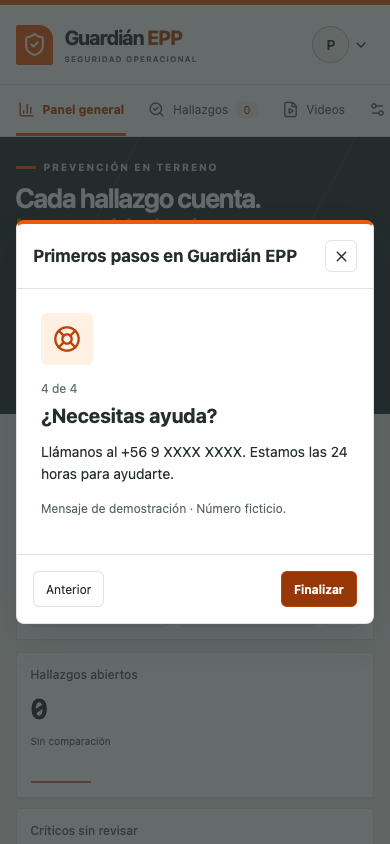
15. Última tarjeta estrecha
Prueba realizada: Pulsar Siguiente.
Resultado esperado: 4 de 4, contacto ficticio y Finalizar visibles.
Resultado observado: Contenido dentro del viewport. Después se pulsó Cerrar y se comprobó el retorno del foco al usuario.
Estado: Pasó